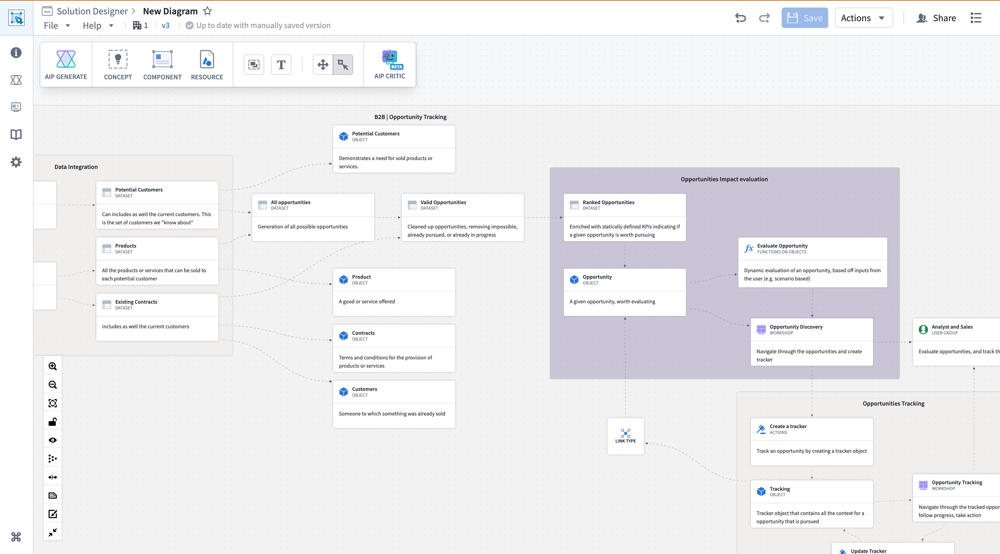
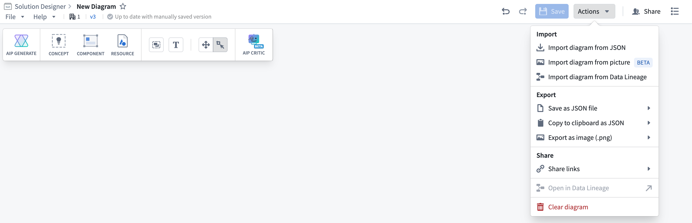
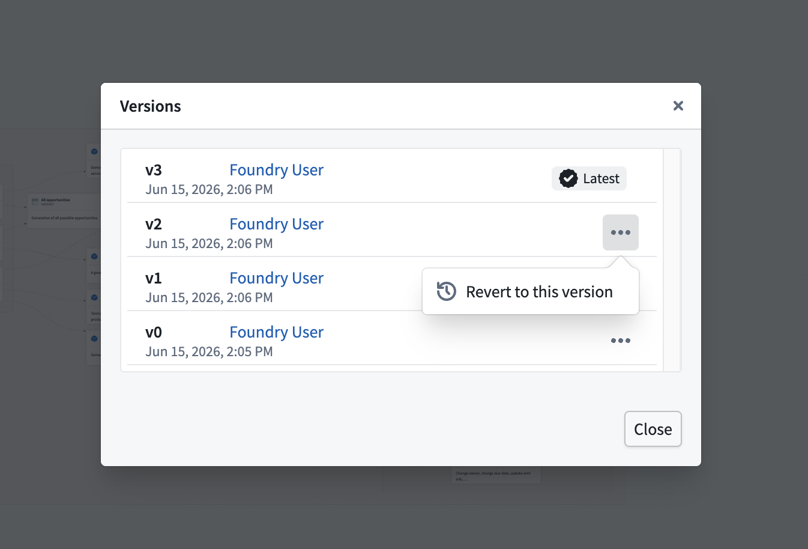
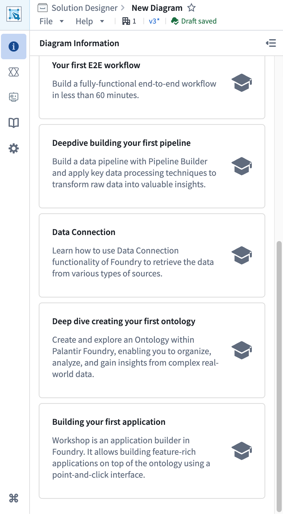
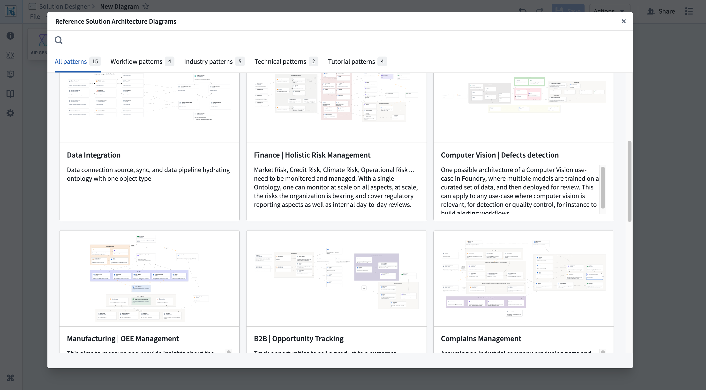
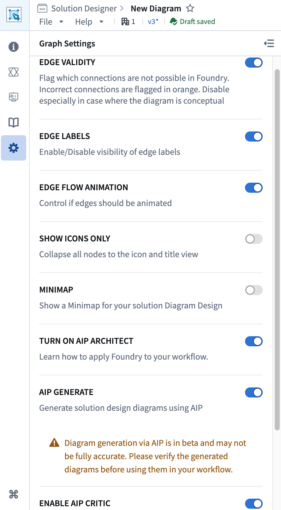

Solution Designer's interface consists of several key areas outlined in the sections below to help you navigate your diagram:

The navigation bar at the top of Solution Designer provides access to diagram-level operations that enable you to:
Up to date with manually saved version or Saved 2m ago.
Solution Designer maintains a complete version history of your diagram. Each auto-save and manual save creates a new version with a timestamp.
To view all diagram versions, select the versions icon, which displays as v{N}, in the navigation bar to the left of the auto-save status indicator. This launches the Versions modal showing a list of all saved versions, with each version displaying the timestamp of when the version was saved, the user who created the version, and a preview or description of changes made.
You can restore any prior version by selecting ... > Restore to this version. Restoring an old version creates a new version and does not delete any versions from the diagram's history.

Use the Actions menu to import, export, share, or clear a diagram as well as open it in Data Lineage if it contains resources, such as a dataset or object type.
:::callout{theme="neutral"} You must have edit permissions on a diagram to export it, as read-only viewers cannot export diagrams. :::
The diagram toolbar appears at the top-left of the screen and contains buttons for adding nodes to your diagram and accessing Solution Designer's key features:
Cmd/Ctrl + B). See component nodes.Select an icon in the sidebar on the left side of the screen to display its full view that is both collapsible and resizable. Different buttons open specific panels in the sidebar:

The Reference Diagrams panel displays the reference architecture library, where you can browse and load pre-built patterns and templates organized by categories (industry patterns, technical patterns, and workflow patterns). Search for patterns by keyword, preview them, and then create a new diagram, add to an existing diagram, or override your current diagram.

The Graph Settings panel enables you to customize how your diagram is displayed and configure Solution Designer features.
Available settings include options for edge display, canvas view controls (mini-map, background grid, and pan mode), icon display modes, and AIP feature toggles. Settings are saved locally to your diagram.
For details on specific canvas features like the mini-map and pan controls, see the canvas controls and pan and zoom documentation.

Solution Designer supports keyboard shortcuts to streamline your workflow.
| Shortcut | Action |
|---|---|
Cmd/Ctrl + B |
Open component picker |
Shift + click or drag |
Multi-select nodes |
Backspace or Delete |
Delete selected nodes or connections |
Cmd/Ctrl + C |
Copy selected nodes to clipboard |
Cmd/Ctrl + V |
Paste nodes from clipboard |
Cmd/Ctrl + Z |
Undo last action |
Cmd/Ctrl + Y or Cmd/Ctrl + Shift + Z |
Redo last action |
These shortcuts allow you to efficiently build and modify diagrams without constantly switching across menus.
Solution Designer supports URL parameters for specific behaviors:
viewer=true: Opens the diagram in read-only viewer mode with pan mode automatically enabled. Useful for sharing diagrams with stakeholders who should only view, not edit.focusRID=<resource-id>: Automatically centers and zooms to a specific node identified by its resource RID.https://{FOUNDRY_URL}/workspace/solution-designer/<diagram-rid>?viewer=true
This opens the diagram in read-only viewer mode, ideal for presentations or reviews.